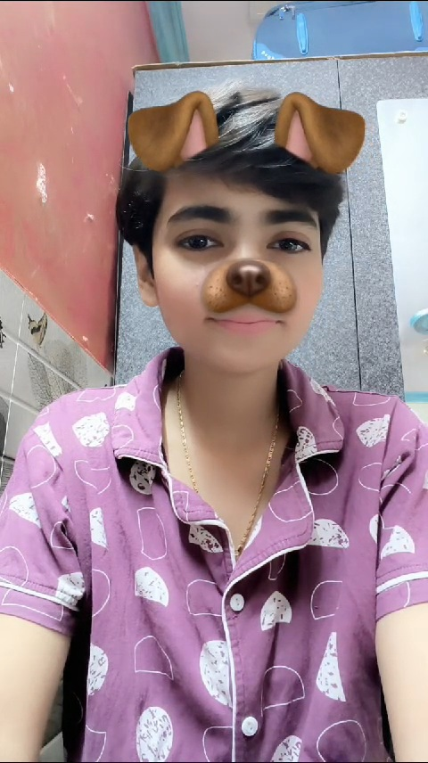

and I fallen in
Love with You ğŸ˜

How can be
someone so cute ❤️

Hello princess it's 11 :11 and time to make wish again ... Vaise I'm happy happy day by day mai aapke or close hote jaa raha hu ... bhout maja aa raha hai pata hai ...mai orr thoda thoda aapke saath normal ho raha hu 😊😚....aapko thoda sa tung karna ... Thoda apko bina bataye soo jana thoda sa aapko wait karana ..yrr like baby g bhout maja aaraha hai .... Hope so ki aap bhi meri company enjoy kar rahe hoge... Vaise mujhse kuch galtiyan ho jaye na toh mujhe pahele na bata dena 😠....aaj apka mood off tha . Toh mujhe ek time lagne laga ki yrr mene kuch galat kar diya kya ya kuch galti ho kya mujhse anjane me but at last aisa kuch nahi tha ...😊...vaise mam kahena chahunga ki Next time jub mood upset ho na to yrr Chod dena saare in kisso ko in wado ko in irado ko tum bus aina dekhna or batana ki meri pasand kaisi hai ....vaise na mam bhout milne ka mun karta hai aapse daily yrr like bechaini si raheti hai ki meri jaan kaisi hai baatein daily ho rahi hai but milke tumhe dekhna... yr like janat naseeb hona .... malum ek Shayari hai ki ... Kya kahe kuch kaha nahi jata ...dard hai pur saha nahi jata.... Mohabbat ho gayi hai mohatarma aapse iss kadar ki mile bina raha nahi jata...... I'm really missing your hand in my hand 🥺.... mohatarma pata mujhe na aapko bhout kiss karne ka mun karta hai ... malum aaj nahi bolta ki bhout saare kiss karne ka mun karta hai but na ek toh kum se kum ek sweet sa gentle sa kiss ... Daily karna chahta hu ....mun bhare ya nah bhare but aapko pyar karna chahta hu ussi sweetness se 💕....vaise haa mam mene apni kuch harkato pe likha tha ki Mere liye Kabhi khoobsurat pari toh kabhi nanhi shaitan ho tum ...mere muh se dusri ladkiyo ka naam sun kyu pareshan ho tum .....yakin kro iss budhu ki ek he jaan ho tum .... Vaise mam mummy bula rahi hai or mujhe ek chiz banana bhi hai toh mai jada bada nahi likhna chahta kyunki mere dil ki baat hamesha adhuri raheni chahiye ... Or haa mam sajde me apke sur jhukaya karenge...aapke baare me sabko bataya karenge baatein samjh me aye ha na aaye hum haa me haa milaya karenge ... I love you the most my teddy 🧸...be mine bus thoda sa or 💕🥰
You are Cute
Amazing ❤️
Drag the papers to move!